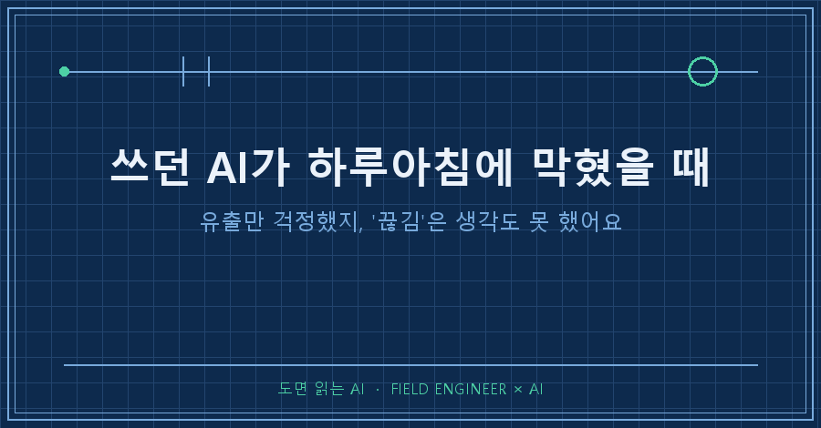
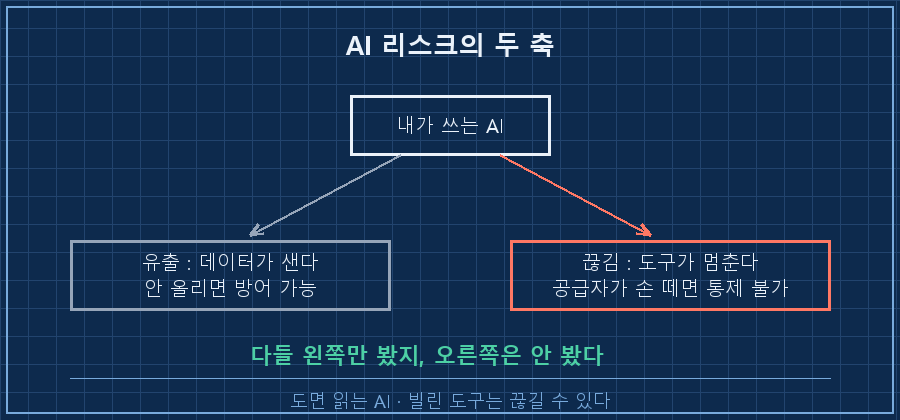
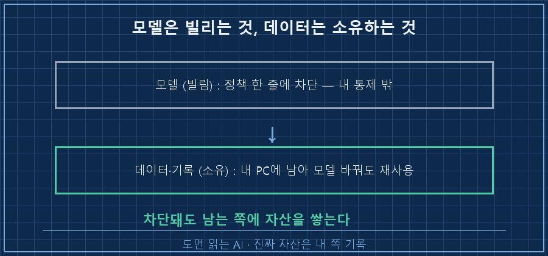
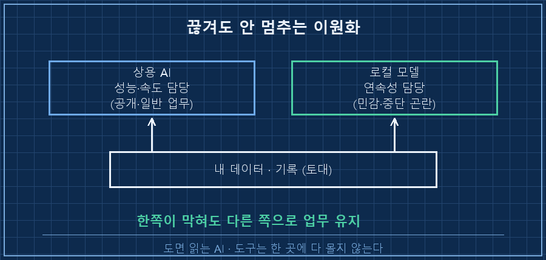

AI 보안 하면 다들 유출부터 떠올리죠.
회사 자료가 학습에 쓰이는 거 아니냐, 어디로 새는 거 아니냐.
저도 딱 그게 전부인 줄 알았어요.
근데 지난달에 제가 겪은 일은 방향이 정반대였어요.
데이터가 새서가 아니라, 쓰던 AI가 갑자기 끊겨서 생긴 문제였거든요.
이 글은 그 AI 서비스 중단을 겪고도 업무가 안 멈춘 이유에 대한 기록이에요.
저는 수소 설비 제어판넬을 15년째 만지는 사람이에요.
판넬 설계하고, PLC 로직 짜고, 현장 나가서 결선 확인하는 게 일이죠.
그리고 이제는 하루 업무의 상당 부분을 AI한테 기대고 일합니다.
그래서 이번 일이 더 크게 다가왔는지도 몰라요.
1. 어느 날 아침, 쓰던 모델이 통째로 막혔어요
지난 6월이었어요.
수출통제 발표 하나로, 제가 쓰던 AI 서비스의 최상위 모델 두 개가 해외 사용자에게 전면 차단됐어요.
저도 매달 돈 내는 유료 구독자인데 말이죠..
출시된 지 며칠 안 된 새 모델을 신나게 굴리던 참이었는데, 하루아침에 접속이 막혀버렸어요.
사용자 국적을 실시간으로 가려낼 방법이 없다는 이유로, 전 세계가 한 번에 잠겼어요.
국내 기관이나 대기업 프로젝트도 같이 끊겼다는 기사가 났고요.
과장은 하지 않을게요.
정확히는 전체 서비스가 아니라 최상위 모델 두 개가 막힌 거예요.
하위 모델로는 계속 일할 수 있었으니까요.
그래도 충격은 충분했어요.
비학습 보장 받고 약관을 아무리 꼼꼼히 읽어도, 정책 한 줄이면 멈춘다는 걸 눈으로 봤으니까요..
2. 유출만 걱정했지, '끊김'은 생각도 못 했어요
그동안 AI 보안 얘기는 사실상 한 축이었어요. "내 데이터가 새는가."
근데 이번 일이 두 번째 축을 보여줬어요. "내 도구가 끊기는가."
이 둘은 성격이 완전히 달라요.
유출은 내가 안 올리면 어느 정도 막아요. 끊김은 내가 아무리 잘해도 공급하는 쪽이 손 떼면 그냥 멈춰요.
공통점은 하나예요. 빌린 것은 어느 쪽도 내가 통제할 수 없다는 거요.

제조업에서 설비 하나를 단일 업체에만 의존하면 위험하다고 하잖아요.
그 업체가 단종하거나 납품을 끊으면 라인이 서니까요.
AI도 똑같더라고요. 편하다고 한 곳에 다 몰아놓으면, 그쪽 사정 하나에 내 업무가 인질이 돼요.
3. 그날 내 손에 뭐가 남았나 세어봤어요
막힌 날, 제 손에 실제로 뭐가 남았는지 세어봤어요.
[모델 차단된 날, 내 손에 남은 것]
쓰던 최상위 모델 : 접속 차단 (통제 밖)
작업 이력 : 수백 건 (내 PC)
지식 문서 : 500개 / 23만 줄 (내 PC)
판단 기준 규칙 파일 : 그대로 (내 PC)
→ 하위 모델로 갈아끼우고 다음 날 정상 업무모델은 막혔지만, 제가 쌓아온 기록은 전부 제 컴퓨터에 있었어요.
그래서 하위 모델로 갈아끼우고, 그 위에 이 기록들을 다시 올리니까 다음 날부터 평소처럼 일했어요.
성능 차이야 있었지만 업무가 서는 일은 없었습니다.
그때 정리된 문장이 이거예요.
모델은 빌리는 것, 데이터는 소유하는 것.
빌린 쪽은 언제든 조건이 바뀔 수 있으니, 진짜 자산은 어떤 모델 위에서도 다시 굴러가는 내 쪽 기록이더라고요.

4. 그래서 지금은 갈라서 씁니다
이 일을 겪고 나서 도구 쓰는 방식을 바꿨어요.
핵심은 이원화예요. 성능은 빌려 쓰되, 업무가 서는 건 못 참으니까요.
- 공개 자료랑 일반 업무 문서는 상용 AI로 마음껏 씁니다. 속도가 완전히 다르니까요.
- 민감하거나 중단되면 곤란한 작업은 데이터가 밖으로 안 나가는 로컬 모델도 같이 굴려요.
로컬 모델이 그걸 해주냐 물으시면, 분류·추출·요약·문서 정리 수준은 요즘 오픈 모델로 충분히 돌아가요.
GPU 없는 사무용 PC에서 도는 소형 모델도 나와 있고요.
다만 솔직히, 최상위 상용 모델처럼 복잡한 판단을 한 방에 매끄럽게 해내진 못해요.
고난도 설계나 애매한 판단은 아직 큰 모델이 확실히 낫습니다.
그래서 로컬에 전부 걸자는 게 아니라, "끊겨도 이 일은 굴러가게" 하는 최소한의 뒷문으로 두는 거예요.

정리하면 이래요.
모델은 빌리는 거라 유출도 끊김도 내 통제 밖이고, 데이터는 소유하는 거라 모델이 바뀌어도 남아요.
그러니 기록과 기준은 내 쪽에 쌓고, 도구는 한 곳에 다 몰지 않는 것.
이번 차단 사태가 저한테는 그 선을 그어볼 좋은 계기였어요!
자주 묻는 질문
Q. AI가 갑자기 막힐 일이 얼마나 되겠어요?
저도 그렇게 생각했어요. 근데 이번엔 기술 문제도, 요금 문제도 아니고 정책 한 줄이었어요. 유료로 잘 쓰던 도구가 내 잘못이 하나도 없이 하루아침에 끊겼죠. 확률이 낮아도, 멈추면 업무 전체가 서는 일은 미리 뒷문을 만들어두는 게 싸게 먹혀요.
Q. 중소기업이 로컬 모델까지 돌리는 건 부담스러운데요?
전부 로컬로 옮기라는 얘기가 아니에요. 평소엔 상용 AI로 빠르게 일하되, "이건 멈추면 곤란하다" 싶은 작업 한두 개만 로컬로도 돌아가게 이중화해 두는 거예요. 요즘은 사무용 PC급에서 도는 소형 모델도 있어서, 분류·정리 같은 단순 작업부터 얹어보면 감이 옵니다.
지금 회사에서 AI를 쓰고 있다면, 한 가지만 자문해 보세요.
그 도구가 내일 아침 막히면, 우리 업무는 며칠이나 버틸 수 있는지.
다음 글에서는 차단당한 그날, 하위 모델로 갈아끼우면서 실제로 뭘 어떤 순서로 옮겼는지 자세히 풀어볼게요.
AI를 업무에 굴리다 깨지고 고친 이런 기록들은 makefield.ai에 차곡차곡 쌓아두는 중이에요.
---
태그: #AI서비스중단 #AI도입리스크 #로컬AI모델 #AI벤더종속 #업무연속성 #온프레미스AI #AI보안 #제조업AI #현장엔지니어 #AI실무 #오픈소스LLM #AI업무자동화 #AI리스크관리 #사내AI도입 #도면읽는AI